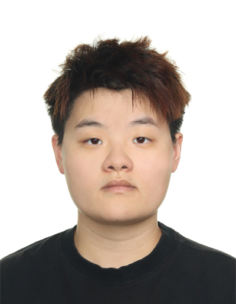

Yang Lu

About Me
I am a graduate student in IT in Business (Financial Technology & Analytics) at Singapore Management University, with a strong foundation in data analytics, AI applications, and business problem-solving.
My background spans analytics consulting, NLP-driven automation, and large-scale project cost management, allowing me to bridge technical analysis with real-world decision-making.
Expected graduation: April 2026
Location: Singapore
Education
Singapore Management University
Master of IT in Business (Financial Technology & Analytics)
Aug 2024 – Apr 2026
- Focus on data analytics, AI applications, and financial technology
- Coursework includes NLP, predictive modeling, visual analytics, and database systems
Singapore Management University
Master of Science in Management
Aug 2022 – Apr 2024
- Focus on strategic decision-making and organisational analysis
Singapore Institute of Management – RMIT University
Bachelor of Science in Construction Management
Jun 2019 – Dec 2021
- Focus on project coordination, cost management, and operational planning
Professional Experience
Data Analytics Intern
Talent Kraft Pte Ltd | Singapore
Jan 2025 – Apr 2025
- Analysed 1,000+ employee engagement survey responses using Python (Pandas, NumPy) and built multiple linear regression models with VIF-based feature reduction.
- Designed and deployed a GenAI-powered Streamlit web app using Claude API to automate qualitative survey analysis, classifying comments into 20+ HR themes with sentiment labels and structured JSON outputs.
- Built an NLP-based job-posting evaluation pipeline using TF-IDF, embeddings, and cosine similarity to validate role-competency alignment.
- Produced client-facing digital deliverables including styled reports, website mock-ups, and workshop materials.
Quantity Surveyor
China Construction (South Pacific) Development Co. Pte Ltd | Singapore
Jun 2021 – Aug 2023
- Managed financial submissions, payment certifications, and cost tracking for a S$1.8B development project.
- Coordinated with 80+ vendors and suppliers, handling variations, contract drafting, and budget optimisation.
- Prepared financial forecasts, variation orders, and monthly claims to support executive-level decision-making.
Academic Projects
Malaysia Food Tourism — NLP & Sentiment Analytics
- Processed 200K food tourism reviews using Python NLP pipelines.
- Performed text cleaning, tokenisation, POS tagging, lemmatisation, and exploratory analysis.
- Built an LDA topic model with coherence score optimisation and inter-topic distance visualisation.
- Applied sentiment analysis using VADER, Naïve Bayes, and Logistic Regression.
- Developed a Priority Score framework to identify strategic improvement areas for Malaysia’s F&B ecosystem.
Agricultural Yield Prediction for Bangladesh
- Analysed 4,600+ crop–district observations to identify drivers of bumper harvests.
- Engineered climate stability features and research-based climatic indexes.
- Built and compared models in SAS Viya including Logistic Regression, Random Forest, Gradient Boosting, and SVM.
- Evaluated performance using F1-score, precision, recall, and AUC.
Visual Analytics — VAST Challenge 2025
Project Dashboard: https://covertreef.netlify.app
- Conducted EDA and IDEA using R (tidyverse, ggplot2) to analyse temporal communication patterns.
- Applied network analysis (visNetwork, ggraph) to identify influence pathways and hidden relationships.
- Built an interactive Shiny dashboard deployed via Netlify for investigative storytelling.
- Integrated temporal, network, and topic-based signals to assess suspicious behaviour.
Technical Skills
Programming & Analytics - Python (Pandas, NumPy, NLP, ML) - R (Shiny, ggplot2, tidyverse, R Markdown) - SQL (MySQL) - SAS Viya
Tools & Platforms - Streamlit - Tableau - Excel (VBA, Macros) - Blue Prism (RPA)
Languages - English - Mandarin (Native)
Contact
📧 Email: ylu60822@gmail.com
🔗 LinkedIn: https://www.linkedin.com/in/yanglu97
📍 Location: Singapore